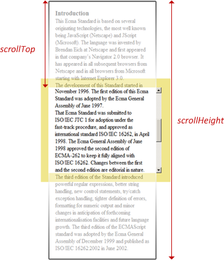
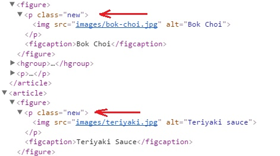
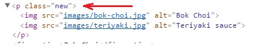
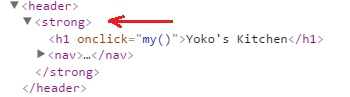

jQuery არის javascript-ის ბიბლიოთეკა, მისი დახმარებით უფრო ადვილი ხდება წვდომა DOM-ის
ელემენტებთან, მათ ატრიბუტებთან და შიგთავსთან. jQuery აგრეთვე არის მოსახერხებელი API (Aplication
Programing Interface ანუ აპლიკაციების პროგრამირების ინტეფეისი) Ajax - თან სამუშაოდ.
დასახელებიდანაც ჩანს, რომ jQuery არის მოთხოვნებზე(query) აგებული მექანიზმი. DOM - ის ელემენტების
იდენტიფიკაციისათვის მოთხოვნებში გამოიყენება CSS სელექტორები (id,class და ა.შ). jQuery-ს ძირითადი
მახასიათებლები და უპირატესობები არის:
HTML/DOM მანიპულაცია
CSS მანიპულაცია
HTML მოვლენების მეთოდები
ეფექტები და ანიმაციები
Ajax
jQuery-ს ჩასმა პროექტში
პროექტში ბიბლიოთეკა jQuery-ს ჩასართავად ან უნდა გადმოვწეროთ
იგი, ან უნდა ჩავსვათ CDN დან.
jQuery-ს გადმოწერა
არსებობს jQuery-ს გადმოსაწერი ორი ვარიანტი:
Production version - ეს არის უკვე გაშვებულ, დაჰოსტილ საიტთან სამუშაო ვერსია, მასში
წაშლილია აბსოლიტურად ყველა "ზედმეტი" სიმბოლო, ახალი ხაზები, ცარიელი ადგილები ანუ
ე.წ "პრობელები" და ა.შ, ასე, რომ ამ ვერსიის წაკითხვა შეუძლებელია, ფაქტიურად ერთ
ხაზზე წერია ყველაფერი.
Development version - ეს არის საიტის კეთებისას გამოსაყენებელი ვერსია, ჩაწერილია გაცილებით
გასაგები და წაკითხვადი ფორმით, დართული აქვს კომენტარები და ა.შ
გადმოწერილი ბიბლიოთეკა არის ცალკე ფაილი და მას უნდა დავუკავშიორდეთ html <script > ტეგით
(ტეგი უნდა ჩაჯდეს <head > სექციაში)
<head>
<script src="jQuery-3.1.1.min.js"></script >
</head>
jQuery CDN
თუ არ გვინდა ბიბლიოთეკის გადმოწერა მაშინ შეგვიძლია ის ჩავსვათ CDN - დან (Content Delivery
Network ანუ ინფორმაციის მიწოდების ქსელი).
<head>
<script src="https://ajax.googleapis.com/ajax/libs/jquery/3.1.1/jquery.min.js"></script>
</head>
ბიბლიოთეკის ჩასმის გარდა სავარაუდოდ გვექნება ჩვენი საკუთარი jS გაფართოების ფაილიც,
რომელშიც ავკრეფთ ჩვენს jQuery კოდს, მაგალითად myscript.js, ეს ფაილიც უნდა დავაკავშიროთ
მიმდინარე html გვერდს ასევე html <script > ტეგის საშუალებით, მაგრამ აქ ყურადღება უნდა მიექცეს
შემდეგ ფაქტს : იმისათვის რომ myscript.js ფაილმა იმუშაოს მისი ჩართვა უნდა მოხდეს თავად
ბიბლიოთეკის შემდეგ
<head>
<script src="jQuery-3.1.1.min.js"></script >
<script src="myscript.js"></script >
</head>
2. სინტაქსი
jQuery სინტაქსი
jQuery სინტაქსი შექმნილია HTML ელემენტების ამორჩევისა და მათზე რაიმე ქმედების ჩატარებისათვის. ძირითადი
სინტაქსი არის $(selector).action(), სადაც :
$ - jQuery-სთან წცდომის აღმნიშვნელი ნიშანი, მის მაგივრად შეიძლება გამოვიყენოთ
ჩანაწერი jQuery, ანუ jQuery = $.
(selector) - რომელიმე HTML ელემენტის "მოთხოვნა (ან პოვნა)".
action() - ქმედება, რომელიც უნდა შესრულდეს ამორჩეულ HTML ელემენტზე.
კონკრეტული მაგალითები :
$(this).hide() - დამალავს მიმდინარე ელემენტს.
$("p").hide() - დამალავს ყველა <p > ელემენტს.
$(".test").hide() - დამალავს ყველა ელემენტს, რომელთა კლასიცაა test.
$("#test").hide() - დამალავს ყველა ელემენტს, რომელთა id არის test.
Document Ready მოვლენა
განვიხილოთ ასეთი ჩანაწერი:
$(document).ready(function(){
// jQuery მეთოდები მოთავსდება აქ...
});
ეს ჩანაწერი ნიშნავს რომ არ მოხდეს არანაირი jQuery კოდის შესრულება გვერდის სრულ ჩატვირთამდე, ანუ
მანამ სანამ გვერდი არ იქნება მზად (ready). გვერდის სრული ჩატვირთვა კი ნიშნავს იმას რომ შეიქმნება DOM
ხე, ჩაითვირთება ყველა გარე რესურსი (სკრიპტი, სტილი და ა.შ). გვერდის სრულ ჩატვირთვაზე დალოდება
გვაზღვევს რიგი შეცდომებისაგან, მოვიყვანოთ მაგალითები სადაც შესაძლებელია არ შესრულდეს კონკრეტული
ოპერაცია თუ გვერდი სრულად არ იქნება ჩატვირთული :
მცდელობა იმისა, რომ დავმალოთ ელემენტი, რომელიც ჯერ არ შექმნილა.
მცდელობა იმისა, რომ გავიგოთ სურათის ზომები, რომელიც ჯერ არ ჩატვირთულა.
jQuery-ს შემქმნელებმა გააკეთეს Document Ready მოვლენის აღწერის უფრო შემოკლებული ვარიანტიც :
$(function(){
// jQuery მეთოდები მოთავსდება აქ...
});
მაგრამ კოდის წაკითხვა უფრო ადვილია როდესაც გამოყენებულია Document Ready მოვლენის აღწეის
პირველი მეთოდი.
3. სელექთორები
იმისათვის, რომ რომელიმე HTML ელემენტზე ჩავატაროთ ესა თუ ის ოპერაცია, ჯერ უნდა აირჩეს ეს ელემენტი.
სელექთორი არის გამოსახულება, რომლის დახმარებითაც ხორციელდება ელემენტის ძებნა.
სელექთორში შეიძლება გამოყენებულ იქნას ელემენტის id, css კლასი, სახელი, ტიპი, ატრიბუტი, ატრიბუტის
მნიშვნელობა და ა.შ. ყველა სელექთორისათვის აუცილებელი ძირითადი სინტაქსი არის $().
ძირითადი სელექთორები
* - ყველა ელემენტი
tagName - ელემენტები მითითებული html ტეგის მიხედვით
.className - ელემენტები რომელთა კლასია "className"
#idName - ელემენტები რომელთა id არის "idName"
სელექთორების გადაცემა ხდება სტრიქონული სახით და ამიტომ სელექთორი უნდა მოთავსდეს ბრჭყალებში.
ელემენტის სახელი სელექთორში
ელემენტის სახელით მიხედვით ძებნისას სელექთორს ეთითება ამ ელემენტის ტეგის სახელი, მაგალითად თუ
გვინდა ავარჩიოთ ყველა პარაგრაფი, სელექთორს ექნება ასეთი სახე - $("p")
$(document).ready(function(){
$("button").click(function(){
$("p").hide();
});
});
#id სელექთორი
jQuery #id სელექთორი საჭირო ელემენტის მოსაძებნად იყენებს HTML ელემენტის id ატრიბუტს. როგრც
წესი, სასურველია, რომ დოკუმენტში ერთ id-ს შეესაბამებოდეს მხოლოდ ერთი ელემენტი, ამიტომ ეს
სელექთორი გამოიყენება მაშინ, როდესაც გვინდა ერთი, უნიკალური ელემენტის პოვნა.
id-ის მიხედვით ელემენტის საპოვნელად, სელრქთორში უნდა აიკრიფოს "#" სიმბოლო და შემდეგ id.
ანუ სელექთორს ექნება ასეთი სახე :$("#test")
$(document).ready(function(){
$("button").click(function(){
$("#test").hide();
});
});
.class სელექთორი
jQuery .class სელექთორი საჭირო ელემენტის მოსაძებნად იყენებს HTML ელემენტის class ატრიბუტს.
კლასის მიხედვით ელემენტის საპოვნელად, სელრქთორში უნდა აიკრიფოს წერტილი - "." სიმბოლო და
შემდეგ კლასი. ანუ სელექთორს ექნება ასეთი სახე :$(".test")
$(document).ready(function(){
$("button").click(function(){
$(".test").hide();
});
});
ატრიბუტ-სელექთორები
[name] - ელემენტები რომლებსაც აქვთ ატრიბუტი სახელად name, მაგალითად
$("[class]").css({"border":"2px solid red"});
[name=value] - ელემენტები რომლებსაც აქვთ ატრიბუტი სახელად name, და
ამ ატრიბუტის მნიშვნელობა არის value. მაგალითად
$("[class=courses]").css({"border":"2px solid red"});
[name=!value] - ელემენტები რომლებსაც აქვთ ატრიბუტი სახელად name, და
ამ ატრიბუტის მნიშვნელობა არ უდრის value-ს. მაგალითად
$("[class!=courses]").css({"border":"2px solid red"});
[name^=value] -ელემენტები რომლებსაც აქვთ ატრიბუტი სახელად name, და
ამ ატრიბუტის მნიშვნელობა იწყება value სიტყვით. მაგალითად თუ ელემენტის კლასი არის courses
მაშინ ეს ელემენტი მოყვება შემდეგ ფილტრში
$("[class^=cou]").css({"border":"2px solid red"});
[name$=value] -ელემენტები რომლებსაც აქვთ ატრიბუტი სახელად name, და
ამ ატრიბუტის მნიშვნელობა მთავრდება value სიტყვით. მაგალითად თუ ელემენტის კლასი არის
courses მაშინ ეს ელემენტი მოყვება შემდეგ ფილტრში
$("[class$=ses]").css({"border":"2px solid red"});
[name*=value] -ელემენტები რომლებსაც აქვთ ატრიბუტი სახელად name, და
ამ ატრიბუტის მნიშვნელობა შეიცავს value სიტყვას. მაგალითად თუ ელემენტის კლასი არის
courses მაშინ ეს ელემენტი მოყვება შემდეგ ფილტრში
$("[class*=urs]").css({"border":"2px solid red"});
[name~=value] - ელემენტები რომლებსაც აქვთ ატრიბუტი სახელად name, და
ამ ატრიბუტის მნიშვნელობა შეიცავს value სიტყვას როგორც ცალკე სიტყვას. მაგალითად თუ ელემენტის
კლასი არის learn courses მაშინ ეს ელემენტი მოყვება შემდეგ ფილტრში
$("[class~=courses]").css({"border":"2px solid red"});
[name|=value] - ელემენტები რომლებსაც აქვთ ატრიბუტი სახელად name, და
ეს ატრიბუტი შეიცავს პრეფიქსად value სიტყვას. მაგალითად თუ ელემენტის კლასი არის
pref-courses მაშინ ეს ელემენტი მოყვება შემდეგ ფილტრში
$("[class|=pref]").css({"border":"2px solid red"});
[first][second]... - ასეთი სელექთორი საშუალებას გვაძლევს ელემენტი
მოვძებნოთ ზემოთ ჩამოთვლილი ვარიანტების კომბინაციით. მაგალითად მოვძებნოთ ელემენტი,
რომელსაც აქვს ატრიბუტი alt, რომლის კლასიც არის coursess და რომლის id შეიცავს პრეფიქსს
pref
$("[alt][class=coursess][id|=pref]").css({"border":"2px solid red"});
4. ფილტრები
ზემოთ განხილული სელექთორების მაგალითებიდან ჩანს, რომ ხშირ შემთხვევაში სელექთორები აბრუნებენ
ელემენტთა სიმრავლეს, მაგალითად $('li') სელექთორი აბრუნებს დოკუმენტში არსებულ ყველა li
ელემენტს, მაგრამ არც თუ იშვიათად საჭიროა რომ მივმართოთ რომელიმე კონკრეტულს ამ სიმრავლიდან,
მაგალითად პირველს ან ბოლოს და ა.შ. ამისათვის jQuery-ში გამოიყენება ფილტრები.
მარტივი ფილტრები
$(":first") - პირველი ნაპოვნი ელემენტი, მაგალითად
$("li:first").css({"border":"2px solid red"});
$(":last") - ბოლო ნაპოვნი ელემენტი, მაგალითად
$("li:last").css({"border":"2px solid red"});
$(":not(selector)") - ყველა ელემენტი გარდა მითითებულისა, მაგალითად
გვაქვს ორი სია ol და ul, რომლებსაც აქვთ ერთიდაიგივე კლასი my-list, და გვინდა მხოლოდ
ul-ის ამორჩევა
$(".my-list:not(ol)").css({"border":"2px solid red"});
ახლა ამოვარჩიოთ სიის ყველა ჩანაწერი გარდა პირველისა
$("ol li:not(li:first)").css({"border":"2px solid red"});
$(":even") - ამორჩეული ელემენტების სიმრავლეში ყველა ლუწ პოზიციაზე
მდგომი ელემენტი, მაგალითად
$("li:even").css({"border":"2px solid red"});
$(":odd") - ამორჩეული ელემენტების სიმრავლეში ყველა კენტ პოზიციაზე
მდგომი ელემენტი, მაგალითად
$("li:odd").css({"border":"2px solid red"});
$(":gt()") - ამორჩეული ელემენტების სიმრავლეში, პარამეტრად მითითებულ
როცხვზე მეტი ინდექსის მქონე ელემენტები.
$("li:gt(2)").css({"border":"2px solid red"});
$(":lt()") - ამორჩეული ელემენტების სიმრავლეში, პარამეტრად მითითებულ
რიცხვზე ნაკლები ინდექსის მქონე ელემენტები.
$("li:lt(6)").css({"border":"2px solid red"});
$(":eq()") - ამორჩეული ელემენტების სიმრავლეში, პარამეტრად მითითებულ
როცხვის ტოლი ინდექსის მქონე ელემენტები. მაგალითად ელემენტი რომლის ინდექია 2 ანუ მესამე
ელემენტი
$("li:eq(2)").css({"border":"2px solid red"});
$(":header") - ყველა სათაური ელემენტი - h1, h2... მაგალითად თუ
კლასი heading აქვს სათაურსაც და ჩვეულებრივ პარაგრაფსაც და გვინდა მხოლოს სათაურის ამორჩევა
$(".heading:header").css({"border":"2px solid red"});
სელექთორში შესაძლებელია გამოვიყენოთ რამოდენიმე ფილტრი ერთად, მაგალითად
$(".heading:not().odd").css({"border":"2px solid red"});
შიგთავსის მიხედვით გაფილტვრა
:contains(text) - ელემენტები, რომელთა შიგთავსიც მოიცავს text-ს.
მაგალითად ავარჩიოთ h2 ელემენტი, რომელიც შეიცავს სიტყვას Sauces
$("h2:contains(Sauces)").css({"border":"2px solid red"});
:empty - ელემენტები შიგთავსის გარეშე (არ შეიცავენ არც სხვა ელემენტებს და
არც ტექსტს)
$("h2:empty").css({"border":"2px solid red"});
:has(selector) - ელემენტები, რომლებიც შეიცავენ თუნდაც ერთ ისეთ
ელემენტს რომელიც აკმაყოფილებს selector-ს, მაგალითად ავარჩიოთ ყველა პარაგრაფი, რომლებშიც
მოთავსებულია ერთი სურათი მაინც
$("p:has(img)").css({"border":"2px solid red"});
:parent - არაცარიელი ელემენტები, parent ნიშნავს მშობელს, და თუ
ელემენტი მშობელია ესეიგი ის ცარიელი არ არის, მაგალითად ეს ჩანაწერი დააბრუნებს მხოლოდ
არაცარიელ აბზაცებს
$("p:parent").css({"border":"2px solid red"});
შვილობილი ელემენტების გაფილტვრა
:first-child - მშობელ ელემენტში პირველ პოზიციაზე მდებარე შვილობილი
ელემენტი. მაგალითად ul სიის პირველი შვილობილი li ჩანაწერი.
$("li:first-child").css({"border":"2px solid red"});
:first-child - მშობელ ელემენტში ბოლო პოზიციაზე მდებარე შვილობილი
ელემენტი. მაგალითად ul სიის პირველი შვილობილი li ჩანაწერი.
$("li:last-child").css({"border":"2px solid red"});
:nth-child() - მშობელ ელემენტში პარამეტრად მითითებულ პოზიციაზე მდებარე
შვილობილი ელემენტები (ლუწ პოზიციაზე - even, კენტ პოზიციაზე - odd, ან რომელიმე კონკრეტულ
პოზიციაზე, ამ შემთხვევებში გადანომრვა ხდება არა 0-დან, როგორც ეს მასივში და ა.შ ხდება,
არამედ 1-დან ). მაგალითად ul სიის ლუწ პოზიციებზე მდგომი შვილობილი li ჩანაწერები
$("li:nth-child(even)").css({"border":"2px solid red"});
ul სიის კენტ პოზიციებზე მდგომი შვილობილი li ჩანაწერები
$("li:nth-child(odd)").css({"border":"2px solid red"});
ul სიის მესამე პოზიციებზე მდგომი შვილობილი li ჩანაწერები
$("li:nth-child(3)").css({"border":"2px solid red"});
:only-child - ელემენტები რომლებიც წარმოადგენენ თავისი მშობლის ერთადერთ
შვილობილს, მაგალითად თუ ul ელემენტში არის მხოლოდ და მხოლოდ ერთი li შვილობილი ელემენტი
სა სხვა არაფერი
$("li:only-child").css({"border":"2px solid red"});
ფორმის ელემენტების გაფილტვრა
:button - ელემენტები ტეგით ან ტიპით button.
$("input:button").css({"border":"2px solid red"});
:radio - input type="radio" ელემენტები რომლებიც წარმოადგენენ გადამრთველებს
$("input:radio").css({"display":"none"});
:checkbox - input type="checkbox" ელემენტები
$("input:checkbox").css({"display":"none"});
:text - ტექსტური ველები ანუ input type="text"
$("input:text").css({"border":"2px solid red"});
:password - ველები რომლებიც გამოიყენება პაროლის შესაყვანად ანუ
input type="password"
$("input:password").css({"border":"2px solid red"});
:file - ელემენტები რომლებიც გამოიყენება ფაილის ასატვირთად ანუ
input type="file"
$("input:file").css({"border":"2px solid red"});
:submit - ფორმის გასაგზავნი ელემენტები ანუ input type="submit"
$("input:submit").css({"border":"2px solid red"});
:reset - ელემენტები რომლებიც გამოიყენება ფორმის გასასუფთავებლად ანუ
ანუ input type="reset"
$("input:reset").css({"border":"2px solid red"});
:image - image ტიპის ელემენტები რომლებიც გამოიყენება ფორმის გასაგზავნად ანუ
ანუ input type="image"
$("input:image").css({"border":"2px solid red"});
:input - ფორმის input, textarea და button ელემენტების ერთობლიობა.
$(".form :input").css({"border":"2px solid red"});
:selected - ეს ფილტრი გამოიყენება html select ელემენტთან მუშაობისას,
და აფიქსირებს select-ში არჩეულ option-ს
<select name="sel" onchange="my()">
<option value="one">1</option>
<option value="two">2</option>
<option value="three">3 </option>
</select>
<script>
function my() {
alert($(".form :selected").val());
}
</script>
:checked - ეს ფილტრი გამოიყენება checkbox ან radio ტიპის ელემენტთან
მუშაობისას, და აფიქსირებს არჩეულ ელემენტს
<input type="checkbox" name="check" value="1" onchange="my()">
<script>
function my() {
alert($(".form :checked").val()); // 1
}
</script>
:enabled - ფორმის აქტიური ელემენტები.
$(".form :enabled").css({"border":"2px solid red"});
:disabled - ფორმის არააქტიური ელემენტები.
<input type="text" name="text" disabled="true">
გაფილტვრა რამდენიმე სელექთორის ერთდროულად გამოყენებით
first, second ... - გაფილტვრა პირველი , მეორე და ა.შ სელექთორის
მიხედვით, მაგალითად გავფილტროთ span, p და a ელემენტები ერთად
$("p, span, a").css({"border":"2px solid red"});
უნდა აღინიშნოს, რომ ასეთ შემთხვევაში მძიმეების გამოყენება აუცილებელია, წინააღმდეგ შემთხვევაში
გაიფილტრებოდა p ელემენტში მოთავსებულ span ელემენტში მოთავსებული a ელემენტი.
parent > child - მშობელი ელემენტის parent-ის პირდაპირი
შვილობილი ელემენტი child. ანუ <p><a></a></p> და არა მაგალითად
<p><span><a></a></span></p>
$("p > a").css({"border":"2px solid red"});
prev + next - თუ გვაქცს, რომელიმე ელემენტი prev და გვინდა მის შემდეგ
პირველივე მეზობელი ელემენტის პოვნა უნდა მივუთითოთ სიმბოლო-გასაღები "+"
და შემდეგ თავად მეზობელი. მაგალითად my_ul სიის შემდეგ პირველი მეზობელი აბზაცის გაფილტვრა
მოხდება ასე
$("#my_ul + p").css({"border":"2px solid red"});
prev ~ next - თუ გვაქცს, რომელიმე ელემენტი prev და გვინდა მისი შემდეგი
ყველა მეზობელი ელემენტის პოვნა უნდა მივუთითოთ სიმბოლო-გასაღები "+"
და შემდეგ თავად მეზობლები. მაგალითად my_ul სიის შემდეგი ყველა მეზობელი აბზაცის გაფილტვრა
მოხდება ასე
$("#my_ul ~ p").css({"border":"2px solid red"});
5. ატრიბუტებთან მუშაობა
.attr() - ამ მეთოდის საშუალებით შეგვიძლია დავაბრუნოთ ან შევცვალოთ ელემენტის
ესა თუ ის ატრიბუტი. ატრიბუტის დასაბრუნებლად საკმარისია attr მეთოდს მიეთითოს ერთი პარამეტრი-
იმ ატრიბუტის დასახელება, რომლის დაბრუნებაც გვსურს. მაგალითად დავაბრუნოთ ბმულის href
ატრიბუტი
alert($(".a").attr("href"));
ატრიბუტის შესაცვლელად attr მეთოდსუნდა მიეთითოს ორი პარამეტრი: იმ ატრიბუტის დასახელება,
რომლის შეცვლაც გვსურს და მეორე ის მნიშვნელობა, რომელიც გვინდა რომ მიიღოს ამ ატრიბუტმა.
მაგალითად შევცვალოთ ბმულის href ატრიბუტი
alert($(".a").attr("href","http://facebook.com"));
ატრიბუტის დაბრუნება/შეცვლას ახასიათებს ერთი თავისებურება, დავუშვათ გვაქვს რამოდენიმე ელემენტი
ერთი და იგივე ატრიბუტით, მაგალითად რამოდენიმე სურათი, ბუნებრივია ყველა მათგანს აქვს
ატრიბუტი src. თუ ვახდენთ ატრიბუტის წაკითხვას მაშინ ბრუნდება მხოლოდ პირველი
ელემენტის ატრიბუტი, ხოლო თუ ვახდენთ შეცვლას მაშინ იცვლება ყველა ელემენტის ატრიბუტი.
პარამეტრის გადაცემა შესაძლებელია ობიექტის ლიტერალების გამოყენებითაც, მაგალითად დოკუმენტის
ყველა სურათს შევუსცალოთ სიგანე და წყარო
$("img").attr({
"src":"images/teriyaki.jpg",
"width":"20px"
});
არსებობს პარამეტრის გადაცემის კიდევ ერთი გზა - ესაა ფუნქციის გამოყენებით პარამეტრის მითითება
$("a").attr("href",function () {
return "http://facebook.com";
});
ფუნქციას შეიძლება გადაეცეს ორი პარამეტრი, რეომელთაგანაც პირველი იქნება ელემენტის
ინდექსი ამორჩეულ ელემენტთა სიმრავლეში, ხოლო მეორე იქნება იმ ატრიბუტის მიმდინარე მნიშვნელობა
რომელთანაც ვმუშაობთ. მაგალითად ყოველი ლუწ ინდექსიანი ბმული დავაკავშიროთ google-სთან, ხოლო
ხოლო თუ ის უკვე დაკავშირებულია google-სთან, მაშინ დავაკავშიროთ facebook-თან
$("a").attr("href",function (e_index,e_attr) {
if(e_index % 2 === 0 && e_attr === "http://google.com"){
return "http://facebook.com";
}
});
.removeAttr() - ატრიბუტის წაშლა. მაგალითად ბმულს წავუშალოთ title
ატრიბუტი
$(".a").removeAttr("href"));
.addClass() - კლასის დამატება ელემენტზე.
$(".a").addClass("current");
თუ რომელიმე ელემენტს უკვე აქვს კლასი და მასთან მიმართებაში გამოვიყენებთ addClass მეთოდს,
ელემენტის ძველი კლასი არ შეიცვლება, უბრალოდ ახალი კლასი დაემატება ძველს class "old new".
ამ მეთოდის გამოყენებისას შესაძლებელია ახალი კლასის მნიშვნელობა გადავცეთ ფუნქციის საშუალებითაც:
$("a").addClass(function (){
return "new";
});
.removeClass() - კლასის წაშლა ელემენტზე.
$(".a").removeClass("current");
თუ removeClass() მეთოდს არ გადაეცემა პარამეტრი მაშინ წაეშლება ყველა კლასი რაც გააჩნია.
addClass() მეთოდის მსგავსად removeClass() მეთოდსაც შეიძლება გადაეცეს პარამეტრი ფუნქციის
საშუალებით
$("a").removeClass(function (){
return "new";
});
.toggleClass() - ცვლის კლასის ხელმისაწვდომობას არსებული სიტუაციის
საწინააღმდეგოდ, ანუ თუ აქვს კლასი შლის ამ კლასს, თუ არ აქვს - ამატებს. ქვემოთ მოყვანილ
მაგალითში h1 ელემენტზე პირველი დაჭერისას ყველა a ელემენტს დაემატება კლასი current, შემდეგ
დაჭრაზე წაეშლება და ა.შ
<h1 onclick="my()">toggle class</h1>
function my() {
$("a").toggleClass("current");
}
.hasClass(cName) - ამოწმებს აქვს თუ არა კლასი cName ამორჩეული ელემენტებიდან
ერთს მაინც და აბრუნებს მნიშვნელობებს true ან false.
<h1 onclick="my()">toggle class</h1>
function my() {
alert($("h1").hasClass("current")); // false;
}
.val() - აბრუნებს ან ცვლის ატრიბუტ value-ს მნიშვნელობას, მაგალითად
<input type="text" name="text" class="text" onchange="my()">
function my(){
alert($(".text").val());
}
ახლა შევცვალოთ ატრიბუტის მნიშვნელობა
<input type="text" name="text" class="text" onchange="my()">
function my(){
$(".text").val("new vale");
}
val() მეთოდს პარამეტრი შეიძლება გადაეცეს ფუნქციის საშუალებითაც :
<input type="text" name="text" class="text" onchange="my()">
function my(){
$(".text").val(function () {
return "new valueeeeeee";
});
}
prop() - ნებისმიერი html ელემენტი განიხილება როგორც ობიექტი, შესაბამისად
მათ აქვთ თავისი თვისებები. prop() მეთოდი აბრუნებს ან ცვლის ელემენტის თვისებებს. attr()
მეთოდის მსგავსად, prop()-ის გამოყენებისასაც თუ ვახდენთ თვისების წაკითხვას მაშინ
ბრუნდება ამორჩეული ელემენტებიდან მხოლოდ პირველი ელემენტის თვისება, ხოლო თუ ვახდენთ
შეცვლას მაშინ იცვლება ყველა ელემენტის თვისება.
alert($("h1").prop("tagName")); // H1
6. jQuery და CSS
.css() - აბრუნებს ან ცვლის ელემენტის css პარამეტრებს. ეს მეთოდი შეიძლება
გამოვიყენოთ რამდენიმენაირად, მაგალითად თუ მხოლოდ ერთ პარამეტრს მივუთითებთ, მაშინ
დაბრუნდება მითითებული პარამეტრის შესაბამისი css პარამეტრის მნიშვნელობა, მაგალითად გავიგოთ
div ელემენტის სიგანე
alert($("div#for-ex").css("width"));
თუ ისეთი css პარამეტრის მნიშვნელობის გაგება გვინდა, რომელიც რამოდენიმე სიტყვისგან შედგება,
მაგალითად margin-top, რეკომენდებულია ვიხმაროთ ე.წ camelCase ანუ marginTop
alert($("div#for-ex").css("marginTop"));
თუ css პარამეტრის შეცვლა გვინდა და არა წაკითხვა მაშინ css() მეთოდს უნდა მივუთითოთ ორი
პარამეტრი: პირველი css პარამეტრის დასახელება მეორე კი ის მნიშვნელობა რომელიც გვინდა რომ
ამ css პარამეტრმა მიიღის
$("div#for-ex").css("marginTop","20px");
იმ შემთხვევაში თუ გინდა შევცვალოთ რამოდენიმე css პარამეტრი ერთად, css() მეთოდს პარამეტრები
შეიძლება გადაეცეს ობიექტის ლიტერალების საშუალებით:
$("div#for-ex").css({
"marginTop":"100px",
"border":" 5px solid blue"
});
აგრეთვე შესაძლებელია პარამეტრების ფუნქციის საშუალებით გადაცემაც
$("div#for-ex").css("width",function () {
return "500px";
});
ამ მეთოდსაც ახასიათებს ის თვისება, რომ css პარამეტრის წაკითხვისას ბრუნდება
ამორჩეული ელემენტებიდან მხოლოდ პირველის შესაბამისი css პარამეტრი, ხოლო css პარამეტრის
შეცვლისას იცვლებნა ყველა ამორჩეული ელემენტის შესაბამისი css პარამეტრი.
height ანუ სიმაღლე
- სიმაღლის განხილვა შეიძლება გაიყოს სამ ნაწილად:
.height()
ეს მეთოდი თვლის სიმაღლეს padding, margin და border ანუ გარე და შიდა დაშორებების და ჩარჩოს
მნიშვნელობების გამოკლებით
alert($("div#for-ex").height());
.innerHeight()
ეს მეთოდი თვლის სიმაღლეს padding ანუ შიდა დაშორებების ჩათვლით, თუ ელემენტის სიმაღლე არის
50px და ვთქვათ padding-top არის 20px მაშინ innerHeight იქნება 70px
alert($("div#for-ex").innerHeight()); // 70
.outerHeight()
ეს მეთოდი თვლის სიმაღლეს padding ანუ შიდა დაშორებებისა და margin ანუ გარე დაშორებების
ჩათვლით, თუ ელემენტის სიმაღლე არის 50px და ვთქვათ padding-top არის 20px და margin-top
არის 10px მაშინ outerHeight იქნება 80px
alert($("div#for-ex").outerHeight()); // 80
თუ outerHeight() მეთოდს პარამეტრად მივუთიტებთ true-ს მაშინ სიმაღლეს დაემატება ჩარჩოს სისქეც
და თუ იგივე შემთხვევაში რაც ზემოთ ვნახეთ ჩარჩოს სისქე იქნება 5px მაშინ outerHeight გამოვა90px
alert($("div#for-ex").outerHeight()); // 90
height მეთოდის გამოყენებით შესაძლებელია სიმაღლის არა მარტო წაკითხვა არამედ შეცვლაც თუ მას
გადავცემთ პარამეტრად სასურველ სიდიდეს, ვთქვათ გვინდა რომ div ელემენტის სიმაღლე გახდეს
400px
$("div#for-ex").height(400));
პარამეტრის გადაცემა შესაძლებელია ფუნქციის საშუალებითაც
$("div#for-ex").height(function () {
return "700";
});
ამ მეთოდსაც ახასიათებს ის თვისება, რომ სიმაღლის წაკითხვისას ბრუნდება ამორჩეული
ელემენტებიდან მხოლოდ პირველის სიმაღლე, ხოლო სიმაღლის შეცვლისას იცვლებნა ყველა ამორჩეული
ელემენტის სიმაღლე.
7. jQuery და CSS, scroll
.offset() და .position() - ამ მეთოდების გამოყენებით შესაძლებელია
დავაბრუნოთ ან შევცვალოთ ელემენტის პოზიცია. ეს მეთოდები აბრუნებენ ელემენტის კოორდინატებს.
.offset()
.offset() მეთოდის გამოყენებით შეგვიძლია გავიგოთ ან შევცვალოთ ელემენტის კოორდინატები
დოკუმენტთან მიმართებაში. მეთოდი აბრუნებს ობიექტს, რომელსაც აქვს სულ ორი თვისება top და
left ანუ დოკუმენტის ზედა კიდიდან დაშორება და დოკუმენტის მარცხენა კიდიდან დაშორება
alert($("img").offset().top);
alert($("img").offset().left);
ეს კოდი დააბრუნებს დოკუმენტში პირველი შემხვედრი სურათის კოორდინატებს.
რაც შეეხება offset()-ის საშუალებით კოორდინატებიშ შეცვლას - ამისათვის მეთოდს უნდა გადავცეთ
ორი პარამეტრი, ობიექტის ლიტერალის საშუალებით
$("h1").offset({top:100,left:300});
.position()
.position() მეთოდის გამოყენებით შეგვიძლია მხოლოდ გავიგოთ ელემენტის
კოორდინატები ისეთ უახლოეს მშობელ ელემენტთან მიმართებაში, რომელსაც მითითებული აქვს css
პარამეტრი position (relative, absolute ან fixed). მეთოდი აბრუნებს ობიექტს, რომელსაც აქვს
სულ ორი თვისება top და left ანუ მშობელი ელემენტის ზედა კიდიდან დაშორება და მშობელი
ელემენტის მარცხენა კიდიდან დაშორება
alert($("img").position().top);
alert($("img").position().left);
ეს კოდი დააბრუნებს დოკუმენტშიპირველი შემხვედრი სურათის კოორდინატებს.
scrollTop() და scrollLeft() - ეს მეთოდები აბრუნებენ ან ცვლიან ელემენტის იმ
ნაწილის სიგანეს/სიმაღლეს, რომელიც დაიმალება სიგანეში/სიმაღლეში სქროლისას (თუ ოდესმე ამას ვინმე
წაიკითხავთ სიამოვნებით მივიღებ ქართული სიტვებით გადმოცემულ უკეთეს ახსნას ;) )

scrollTop() და scrollLeft() მეთოდების საშუალებით მარცხენა და ზედა სქროლის სიდიდეების დაბრუნება
შეიძლება შემდეგნაირად
alert($("div").scrollTop());
alert($("div").scrollLeft());
8. jQuery და HTML
ნაწილი პირველი
jQuery-სთან მუშაობისას ხშირად საჭიროა რომელიმე ელემენტში ჩავამატოთ ახალი ელელემენტი, ან ახალი html
კოდი, ან ახალი ტექსტი და ა.შ. ამ თავში განვიხილავთ კონტენტის დამატების საშუალებებს.
.html() - ეს მეთოდი აბრუნებს ან ცვლის არჩეული ელემენტის html შიგთავსს.
შიგთავსის დაბრუნების მაგალითი ასეთია
document.write($("#header").html());
ახლა შევცვალოთ იგივე ელემენტის html შგთავსი
$("header").html("<p>header</p>");
როგორც ვხედავთ შიგთავსის შეცვლისას html() მეთოდს პარამეტრად გადაეცა ჩვეულებრივი html სინქასი,
მაგრამ აგრეთვე შესაძლებელია გადავცეთ jQuery სელექთორებით არჩეული პარამეტრიც, მაგალითად ელემენტში
ჩავსვათ დოკუმენტში არსებული ყველა სურათი
$("header").html($("img"));
html() მეთოდს პარამეტრი შეიძლება გადაეცეს ფუნქციის სახითაც
$("header").html(function () {
return "<i>ghjghjghj</i>";
});
ფუნქციას შეიძლება ფადაეცეს ორი პარამეტრი რომელთაგან პირველი აღნიშნავს არჩეული ელემენტის
ინდექსს ხოლო მეორე html შიგთავსის მიმდინარე მნიშვნელობას. ამ მეთოდსაც ახასიათებს ის თვისება,
რომ html შიგთავსის წაკითხვისას ბრუნდება ამორჩეული ელემენტებიდან მხოლოდ პირველის შესაბამისი
შიგთავსის, ხოლო html შიგთავსის შეცვლისას იცვლება ყველა ამორჩეული ელემენტის შესაბამისი html
შიგთავსი.
.text() - ეს მეთოდი აბრუნებს ან ცვლის არჩეული ელემენტის ტექსტურ შიგთავსს.
შიგთავსის დაბრუნების მაგალითი ასეთია
alert($("header").text());
ახლა შევცვალოთ იგივე ელემენტის ტექსტური შგთავსი
$("header").text("new text");
text() მეთოდს პარამეტრი შეიძლება გადაეცეს ფუნქციის სახითაც
$("header").text()(function () {
return "new text";
});
თუ text() მეთოდს პარამეტრად გადავცემთ html ტეგების შემცველ ტექსტს ეს ტეგები აღიქმება ჩვეულებრივ
ტექსტად და არა როგორც html ტეგებად
$("header").text("<i>new text</i>"); // შედეგი იქნება <i>new text</i> და არა new textფუნქციას შეიძლება ფადაეცეს ორი პარამეტრი რომელთაგან პირველი აღნიშნავს არჩეული ელემენტის
ინდექსს ხოლო მეორე ტექსტური შიგთავსის მიმდინარე მნიშვნელობას. ამ მეთოდსაც ახასიათებს ის თვისება,
რომ ტექსტური შიგთავსის წაკითხვისას ბრუნდება ამორჩეული ელემენტებიდან მხოლოდ პირველის შესაბამისი
შიგთავსის, ხოლო ტექსტური შიგთავსის შეცვლისას იცვლება ყველა ამორჩეული ელემენტის შესაბამისი ტექსტური
შიგთავსი.
.wrap() და .wrapAll() - ამ მეთოდების საშუალებით შესაძებელია ამორჩეული
ელემენტის ახალ html ელემენტებში მოქცევა (wrap ინგლისურად ნიშნავს გახვევას შეფუთვას), ანუ
ამორჩეული ელემენტი მოექცევა პარამეტრად მითითებულ html სინტაქსში, მაგალითად გვაქვს პარაგრაფი p
რომლის კლასიცაა new და გვინდა რომ დოკუმენტში არსებული ყველა სურათი მოექცეს ამ პარაგრაფში
$("img").wrap("<p class='new'></p>");
ეს ჩანაწერი ყველა სურათისათვის ცალ-ცალკე შექმნის <p class="new"></p> აბზაცს და მოათავსებს
თითო სურათს თითო მათგანში

wrapAll() მეთოდი კი შექმნის ერთ <p class="new"></p> აბზაცს და ყველა სურათს ერთად მოათავსებს
მასში

ფუნქციის საშუალებით პარამეტრის გადაცემა შესაძლებელია მხოლოდ wrap() მეთოდისათვის
$("img").wrap(function () {
return "<p class='new'></p>";
});
.wrapInner() - ამ მეთოდის საშუალებით შესაძებელია ამორჩეული ელემენტის
შიგთავსის ახალ html ელემენტებში მოქცევა, ანუ ამორჩეული ელემენტის შიგთავსი
მოექცევა პარამეტრად მითითებულ html სინტაქსში. მაგალითად div ელემენტის შიგთავსი მოვაქციოთ
strong ტეგში
$("header").wrapInner(function () {
return "";
});

.unwrap() - ეს მეთოდი შლის ამორჩეული კვანძის მშობელ ელემენტს, მაგალითად
h2 ელემენტში მოქცეულ strong ელემენტს მოვუშალოთ h2
$("strong").unwrap();
ნაწილი მეორე
.append() და .appendTo()
append() მეთოდი ამატებს პარამეტრად მითითებულ კონტენტს ამორჩეული ელემენტის ბოლოში, ანუ
ამორჩეული ელემენტის ბოლო შვილობილი ელემენტის შემდეგ. ვთქვათ გვაქვს ul სია და გვინდა დავამატოთ
ახალი ჩანაწერი.
$("ul").append("<li>new li</li>");
იგივე შეიძლება გაკეთდეს შემდეგნაირადაც
$("ul").append(function () {
return "<li>ghjghj</li>";
});
რაც შეეხება appendTo() მეთოდს - მისი გამოყენებისას ჯერ უნდა შევქმნათ ის რისი დამატებაც გვსურს
და შემდეგ უნდა მივუთითოთ ადგილი სადაც ვამატებთ შექმნილ ელემენტს, ანუ ჯერ ხდება ახალი
შვილობილის განსაზღვრა ხოლო შემდეგ უკვე თავად მშობლის
$("<li>new li</li>").appendTo($("ul"));
.prepend() და .prependTo() - .append() და .appendTo() მეთოდების ანალოგიური
მეთოდები, უბრალოდ ეს მეთოდები ახალ შვილობილ ელემენტს ამატებენ არა მშობელი ელემენტის ბოლოში,
არამედ თავში.
.after() და .insertAfter()
.after() მეთოდი ამატებს მითითებულ შიგთავსს ამორჩეული ელემენტის შემდეგ, ანუ ამორჩეული მეთოდის
შემდეგ იქმნება, იერარქიულად მისი თანამოძმე, ახალი ელემენტი
$("h1").after("<span>span after h1</span>");
რაც შეეხება insertAfter() მეთოდს - მისი გამოყენებისას ჯერ უნდა შევქმნათ ის რისი დამატებაც გვსურს
და შემდეგ უნდა მივუთითოთ ელემენტი რომლის შემდეგაც ვამატებთ შექმნილ ელემენტს, ანუ ჯერ ხდება ახალი
ელემენტის განსაზღვრა ხოლო შემდეგ უკვე იმ ელემენტისა რომლის შემდეგაც ვამატებთ
$("<span>span after h1</span>").insertAfter($("h1"));
.bedore() და .insertBefore() - .after() და .insertAfter() მეთოდების ანალოგიური
მეთოდები, უბრალოდ ეს მეთოდები ახალ ელემენტს ამატებენ არა ამორჩეული ელემენტის შემდეგ, არამედ
ამორჩეული ელემენტის წინ.
9. ელემენტების წაშლა
.remove() და .detach() - ეს მეთოდები DOM-დან შლიან პარამეტრად მითითებულ
ელემენტებს.
$("h1").remove();
ანალოგიურად მუშაობს .detach() მეთოდიც
$("h1").detach();
განსხვავება მათ შორის კი არის შემდეგი : ორივე მეთოდით წაშლილი ელემენტების აღდგენა შეიძლება
მაგრამ, თუ ელემენტს წავშლით remove() მეთოდით და შემდეგ აღვადგენთ მას, მასთან დაკავშირებული
მოვლენათა დამმუშავებლები აღარ იმუშავებენ, detach() მეთოდი კი ინახავს ელემენტთან მიმაგრებულ
მოვლენებს. მაგალითად გვაქვს h1 ელემენტი, რომელზეც მიმაგრებულია მოვლენა click
$("h1").click(function(){
alert("test");
});
var v = $("h1").detach(); // წავშალეთ ელემენტი
v.appendTo("#test-div"); // აღვადგინეთ ელემენტი და მოვათავსეთ #test-div ელემენტში
ამის შემდეგ alert ფუნქცია მაინც იმუშავებს, ხოლო თუ იგივეს ვიზამდით remove() მეთოდის გამოყენებით,
ალერტი აღარ იმუშავებდა.
remove() და detach() მეთოდებს შეიძლება გადაეცეთ პარამეტრები რომლებშიც დაზუსტებული იქნება თუ
რომელი ელემენტის წაშლა გვინდა
$("img").remove(":first");
.empty() - ეს მეთოდი შლის, აცარიელებს ელემენტის შიგთავსს, ანუ თავად ელემენტი
კი რჩება DOM-ში მაგრამ ცარიელდება მისი შიგთავსი
$("h1").empty();
10. მოვლენები
მოვლენების დამუშავების სინტაქსი
მოვლენების დამუშავების სინტაქსი განვიხილოთ click მოვლენის მაგალითზე. განვსაზღვროთ ეს მოვლენა
დოკუმენტის ყველა პარაგრაფისათვის : $("p").click(); შემდეგი ეტაპი არის იმის განსაზღვრა თუ რა უნდა
მოხდეს, როდესაც მოვლენა დაფიქსირდება, ანუ მოვლენას უნდა მივამაგროთ შესაბამისი ფუნქცია:
$("p").click(function(){
// ქმედება აღიწერება აქ !!
});
მაუსის მოვლენები
click
click() მეთოდი ამაგრებს მოვლენის დამმუშავებელ ფუნქციას HTML ელემენტზე, ფუნქცია კი სრულდება მაშინ, როდესაც
მომხმარებელი დააწვება ამ ელემენტს
$("p").click(function(){
$(this).hide();
});
dblclick
dblclick() მეთოდი ამაგრებს მოვლენის დამმუშავებელ ფუნქციას HTML ელემენტზე, ფუნქცია კი სრულდება მაშინ,
როდესაც მომხმარებელი მოახდენს ორმაგ დაწკაპუნებას ამ ელემენტზე
$("p").dblclick(function(){
$(this).hide();
});
mouseenter()
mouseenter() მეთოდი ამაგრებს მოვლენის დამმუშავებელ ფუნქციას HTML ელემენტზე, ფუნქცია კი სრულდება მაშინ,
როდესაც მაუსის ისარი აღმოჩნდება ელემენტის თავზე
$("p").mouseenter(function(){
alert("You entered on element !");
});
mouseleave()
mouseleave() მეთოდი ამაგრებს მოვლენის დამმუშავებელ ფუნქციას HTML ელემენტზე, ფუნქცია კი სრულდება მაშინ,
როდესაც მაუსის ისარი ტოვებს ელემენტს
$("p").mouseleave(function(){
alert("Bye! You now leave element !");
});
mousedown()
mousedown() მეთოდი ამაგრებს მოვლენის დამმუშავებელ ფუნქციას HTML ელემენტზე, ფუნქცია კი სრულდება მაშინ,
როდესაც მაუსის კურსორი არის ელემენტის თავზე და მომხმარებელი დააწვება მაუსის რომელიმე ღილაკს (მარცხენა, შუა,
მარჯვენა)
$("p").mousedown(function(){
alert("mousedown !");
});
mouseup()
mouseup() მეთოდი ამაგრებს მოვლენის დამმუშავებელ ფუნქციას HTML ელემენტზე, ფუნქცია კი სრულდება მაშინ,
როდესაც მომხმარებელი აუშვებს ელემენტზე დაჭერილ მაუსის რომელიმე ღილაკს
$("p").mouseup(function(){
alert("mouseup !");
});
hover()
hover() მეთოდი მოიცავს ორ ფუნქციას და ის არის mouseenter() და mouseleave() მეთოდების კომბინაცია.
პირველი ფუნქცია სრულდება მაშინ, როდესაც მაუსი მივა HTML ელემენტთან, მეორე კი სრულდება მაშინ, როდესაც
მაუსი დატოვებს ელემენტს
$("#p1").hover(function(){
alert("You entered p1!");
},
function(){
alert("Bye! You now leave p1!");
});
on მეთოდი
on() მეთოდის საშუალებით შეგვიძლია html ელემენტს მივამაგროთ, როგორც ერთი, ასევე რამდენიმე მოვლენის
დამმუშავებელი ერთად, ერთის მიმაგრება ხდება ასე
$("p").on("click", function(){
$(this).hide();
});
რამდენიმეს მიმაგრება კი ასე
$("p").on({
mouseenter: function(){
$(this).css("background-color", "lightgray");
},
mouseleave: function(){
$(this).css("background-color", "lightblue");
},
click: function(){
$(this).css("background-color", "yellow");
}
});
კლავიატურის მოვლენები
keydown()
keydown მოვლენა ფიქსირდება როდესაც კლავიატურაზე რომელიმე კლავიში იმყოფება დაჭერილ მდგომარეობაში.
$("input").keydown(function(){
$("input").css("background-color", "yellow");
});
keypress()
keypress() მოვლენა ფიქსირდება როდესაც კლავიატურაზე რომელიმე კლავიში იმყოფება დაჭერილ მდგომარეობაში.
$("input").keypress(function(){
$("input").css("background-color", "yellow");
});
keyup()
keyup() მოვლენა ფიქსირდება როდესაც დაჭერილ კლავიშს აუშვებენ ხელს.
$("input").keyup(function(){
$("input").css("background-color", "yellow");
});
კლავიშზე დაჭერისას მოვლენათა თანმიმდევრობა ასეთია
keydown
keypress
keyup
ფორმის მოვლენები
focus()
focus() მეთოდი ამაგრებს მოვლენის დამმუშავებელ ფუნქციას HTML ფორმის ტექსურ ველებს, ფუნქცია კი სრულდება
მაშინ, როდესაც ელემენტი ღებულობს ფოკუსს
$("input").focus(function(){
$(this).css("background-color", "#cccccc");
});
focusin() და focusout()
focusin მოვლენა ფიქსირდება მაშინ, როდესაც ელემენტი (ან ამ ელემენტის რომელიმე შვილობილი ელემენტი)
ღებულობს ფოკუსს. focusout მოვლენა კი ფიქსირდება მაშინ, როდესაც ელემენტი (ან ამ ელემენტის რომელიმე
შვილობილი ელემენტი) კარგავს ფოკუსს.
$("div").focusin(function(){
$(this).css("background-color", "#FFFFCC");
});
$("div").focusout(function(){
$(this).css("background-color", "#FFFFFF");
});
blur()
blur() მეთოდი ამაგრებს მოვლენის დამმუშავებელ ფუნქციას HTML ფორმის ტექსურ ველებს, ფუნქცია კი სრულდება
მაშინ, როდესაც ელემენტი კარგავს ფოკუსს
$("input").blur(function(){
$(this).css("background-color", "#cccccc");
});
change()
change მოვლენა ფიქსირდება მაშინ როდესაც იცვლება ელემეტის შიგთავსი (მხოლოდ <input>, <textarea> და
<select> ელემენტების). <select> ელემენტის შემთხვევაში მოვლენა ფიქსირდება შეცვლისთანავე ხოლო <input>
და <textarea>- ს შემთხვევაში ფიქსირდება მაშინ, როდესაც მათი შიგთავსის შეცვლის შემდეგ ეს ელემენტები
დაკარგავენ ფოკუსს.
$("input").change(function(){
alert("The text has been changed.");
});
select()
select() მოვლენა ფიქსირდება მაშინ, როდესაც <textarea> ან ტექსტურ <input>-ში მოინიშნება ტექსტი
$("input").select(function(){
alert("Text marked!");
});
submit()
submit მოვლენა ფიქსირდება მაშინ, როდესაც ფორმა იგზავნება
$("form").submit(function(){
alert("Submitted");
});
ბრაუზერის მოვლენები
resize()
resize მოვლენა ფიქსირდება მაშინ, როდესაც ბრაუზერის ფანჯარა იცვლის ზომას. ამ მოვლენის დამმუშავებელში
აღწერილი ფუნქცია სრულდება მაშინ, როდესაც იცვლება ბრაუზერის ფანჯრის ზომები. ეს სკრიპტი დაითვლის თუ
რამდენჯერ შეიცვალა ზომები
$(window).resize(function(){
$('span').text(x += 1);
});
scroll()
scroll მოვლენა ფიქსირდება მაშინ როდესაც მომხმარებელი დასქროლავს ამორჩეულ ელემენტში. ეს მოვლენა მუშაობს
ყველა ისეთ ელემენტთან, რომელთა დასქროლვაც შესაძლებელია, აგრეთვე ობიექტ window-თან.
$("div").scroll(function(){
$("span").text(x += 1);
});
მოვლენა როგორც ობიექტი
თუ მოვლენას განვიხილავთ, როგორც ობიექტს, მაშინ ბუნებრივია მას ექნება კონკრეტული თვისებები. ამ პარაგრაფში
განვიხილავთ მოვლენის, როგორც ობიექტის, ძირითად თვისებებს
event.preventDefault() მეთოდი აჩერებს, აუქმებს მოვლენის დამმუშავებელში აღწერილ ქმედებას. მაგალითად
თუ გვინდა, რომ ბმულზე დაჭრისას არ გადავიდეთ მითითებულ URL-ზე
$("a").click(function(event){
event.preventDefault();
});
event.target()
event.target მეთოდი აბრუნებს თუ რომელ DOM ელემენტზეა მიმაგრებული მოვლენა.
$("p, button, h1, h2").click(function(event){
$("div").html("Triggered by a " + event.target.nodeName + " element.");
});
event.type
event.type თვისება აბრუნებს თუ, რა ტიპის მოვლენა, რომელი მოვლენა დაფიქსირდა
$("p").on("click dblclick mouseover mouseout", function(event){
$("div").html("Event: " + event.type);
});
event.which
event.which თვისება აბრუნებს კლავიატურის ან მაუსის რომელ ღილაკზე დაჭერამ გამოიწვია მოვლენის დაფიქსირება.
$("input").keydown(function(event){
$("div").html("Key: " + event.which);
});
11. ეფექტები
.hide()
hide() მეთოდი შინაარსით იგივეა რაც css თვისება display:none და მალავს ამორჩეულ ელემენტს. ამ მეთოდის
საშუალებით დამალული ელემენტების გამოსაჩენად გამოიყენება მეთოდი show().
$("button").click(function(){
$("p").hide();
});
.show()
show() მეთოდი აჩენს jQuery-ს მეთოდებით და CSS display:none თვისებით დამალულ ელემენტებს.
css visibility:hidden - ამთვისებით დამალულ ელემენტებს show() მეთოდი ვერ გამოაჩენს
$("button").click(function(){
$("p").show();
});
.toggle()
toggle() მეთოდი არის hide() და show() მეთოდების გადამრთველი. ეს მეთოდი ამოწმებს ამორჩეული ელემენტის
ხილვადობას და ასრულებს show()-ს თუ ელემენტი დამალულია და ასრულებს hide()-ს თუ ელემენტი არ არის
დამალული.
$("button").click(function(){
$("p").toggle();
});
.animate()
animate() მეთოდი ასრულებს ანიმაციას CSS თვისებების გამოყენებით. იმისათვის რათა შეიქმნას ანიმაციის ეფექტი
animate() მეთოდი CSS თვისებებს ცვლის დროის მცირე მონაკვეთის ინტერვალებით. შესაძლებელია
მხოლოდ ციფრული მნიშვნელობების ანიმაცია (მაგ: margin:30px), სტრიქონული მნიშვნელობების ანიმაცია შეუძლებელია
(მაგ: background-color:red) თუმცა არის გამონაკლისები "show", "hide" და "toggle", ამ მნიშვნელობებს
შეუძლიათ მოახდინონ ელემენტის დამალვა/გამოჩენა ანიმაციის გამოყენებით
$("button").click(function(){
$("#box").animate({height: "300px"});
});
ესაა იმ css თვისებების ჩამონათვალი, რომელთა შეცვლაც შესაძლებელია ანიმაციით
clearQueue()მ ეთოდი შლის ყველა იმ პროცესს, რომელიც ჯერ არ დაწყებულა მაგრამ მოვლენის დამმუშავებელში
არის აღწერილი და ქმედებათა რიგში რაღაც კონკრეტული ადგილი აქვს (Queue - რიგი, ჯერი). მაგალითად
გვაქვს ორი ღილაკი #start და #stop, #start-ზე დაჭერისას იწყება ამორჩეული ელემენტის ზომების შეცვლის
პროცესი, ეს პროცესი შედგება 4 ეტაპისაგან, ამ პროცესის დროს თუ დავაწვებით #stop ღილაკს, მაშინ პროცესი
შეჩერდება.
$("#start").click(function(){
$("div").animate({height: 300}, 1500);
$("div").animate({width: 300}, 1500);
$("div").animate({height: 100}, 1500);
$("div").animate({width: 100}, 1500);
});
$("#stop").click(function(){
$("div").clearQueue();
});
.delay()
delay() მეთოდი ნიშნავს დროის მთვლელს, რომლის მიხედვითაც ხდება ქმედებათა რიგში შემდეგი ქმედების
შესრულების გადადება (delay - შეყოვნება, გადადება, გადავადება).
$("button").click(function(){
$("#div1").delay("slow").fadeIn();
$("#div2").delay("fast").fadeIn();
$("#div3").delay(800).fadeIn();
$("#div4").delay(2000).fadeIn();
$("#div5").delay(4000).fadeIn();
});
.finish()
finish() მეთოდი აჩერებს მიმდინარე ანიმაციებს, შლის რიგში მდგომ ყველა ანიმაციას და პირდაპირ აბრუნებს იმ
შედეგს რაც ბოლო ანიმაციის შესრულების შემდეგ უნდა მიღებულიყო.
$("#start").click(function(){
$("div").animate({height: 300}, 3000);
$("div").animate({width: 300}, 3000);
});
$("#complete").click(function(){
$("div").finish();
});
.stop()
stop() ეთოდი აჩერებს მიმდინარე ანიმაციას და პროცესი გრძელდება შემდეგი ანიმაციიდან.
$("#start").click(function(){
$("div").animate({height: 300}, 3000);
$("div").animate({width: 300}, 3000);
});
$("#stop").click(function(){
$("div").stop();
});
.fadeIn()
fadeIn() მეთოდი ეტაპობრივად ცვლის ელემენტის სიმუქეს (opacity - გამუქება), სიმკრთალიდან ანუ
უხილავობიდან სიმუქისაკენ ანუ ხილვადობისაკენ.
$("button").click(function(){
$("p").fadeIn();
});
.fadeOut()
fadeOut() მეთოდი ეტაპობრივად ცვლის ელემენტის სიმუქეს (opacity - გამუქება), სიმუქიდან ანუ
ხილვადობიდან სიმკრთალისკენ ანუ უხილავობისკენ .
$("button").click(function(){
$("p").fadeOut();
});
.fadeTo()
fadeTo() მეთოდი ეტაპობრივად ცვლის ელემენტის სიმუქეს სიმუქის განსაზღვრულ კოეფიციენტამდე
$("button").click(function(){
$("p").fadeTo(1000, 0.4);
});
.fadeToggle()
fadeToggle() მეთოდი არის fadeIn() and fadeOut() მეთოდების გადამრთველი. თუ ელემენტი არის მკრთალი
fadeToggle() მეთოდი გაამუქებს მას, ხოლო თუ ელემენტი არის მუქი - გაამკრთალებს.
$("button").click(function(){
$("#div1").fadeToggle();
});
.slideDown()
slideDown() მეთოდი ჩამოშლის (გამოაჩენს) ამორჩეულ ელემენტს. ეს მეთოდი მუშაობს jQuery-ს მეთოდებით
და css display:none მეთოდით დამალულ ელემენტებთან.(არ მუშაობს css visibility:hidden მეთოდთან).
$("button").click(function(){
$("p").slideDown();
});
.slideUp()
slideUp() მეთოდი კეცავს (დამალავს) ამორჩეულ ელემენტს.
$("button").click(function(){
$("p").slideUp();
});
jQuery Callback ფუნქციები
ჯავასკრიპტის ინსტრუქციები სრულდება ნაბიჯ-ნაბიჯ, ხაზების მიხედვით, ეფექტებთან მუშაობისას რიგ შემთხვევებში
ამან შეიძლება გამოიწვიოს შეცდომა, იმდენად რამდენადაც, შემდეგი ხაზის შესრულება შეიძლება დაიწყოს მაშინ
როდესაც რომელიმე ეფექტი ჯერ არ იყოს დასრულებული. ამის თავიდან ასაცილებლად გამოიყენება Callback ფუნქციები
(Callback - დაბრუნება, კომპიუტერულ მეცნიერებაში – კოდი, რომელიც გადაიცემა როგორც სხვა კოდის პარამეტრი).
callback ფუნქცია შესრულდება მას შემდეგ რაც ეფექტი დასრულდება. ტიპიური სინტაქსი ასეთია
$(selector).hide(speed,callback);
$("button").click(function(){
$("p").hide("slow", function(){
alert("The paragraph is now hidden");
});
});
jQuery ჯაჭვური მეთოდები
jQuery-ში შესაძლებელია ერთმანეთს მიებას ქმედებები/მეთოდები. ეს გადაბმები საშუალებას გვაძლევს, რომელიმე
ელემენტთან მიმართებაში გამოვიყენოთ რამოდენიმე jQuery მეთოდი ერთი ჩანაწერის საშუალებით. ამისათვის
საჭიროა ესა თუ ის ქმედება უბრალოდ მივამატოთ მის წინა ქმედებას
$("#p1").css("color", "red").slideUp(2000).slideDown(2000);
როდესაც ქმედებათა გადაბმის შედეგად მიღებული ჯაჭვი საკმაოდ გრძელია, შესაძლებელია ასეთი სინტაქსის გამოყენებაც
$("#p1").css("color", "red")
.slideUp(2000)
...
.slideDown(2000);
12. გადაადგილება, მოძრაობა DOM-ში
jQuery გადაადგილება ანუ მოძრაობა DOM-ში გულისხმობს HTML ელემენტთა "პოვნას" (ამორჩევას) მონათესავე
ელემენტების საშუალებით. თავდაპირველად ირჩევა, რომელიმე ელემენტი და შემდეგ საჭიროების მიხედვით ხდება
გადაადგილება მანამ სანამ არ მივალთ სასურველ ელემენტამდე. სურათზე მოცემულია DOM-ის ფრაგმენტი, იერარქიული
ხე :
jQuery-ის საშუალებით ადვილად შესაძლებელია ამ იერარქიის რომელიმე ელემენტიდან ვიმოძრაოთ ზევით (ancestors,
ancestor - წინაპარი), ქვევით (descendants, descendant-შთამომავალი), ან გვერდულად (siblings,
sibling-დედმამიშვილი).სწორედ ამ მოძრაობას ეწოდება გადაადგილება ანუ მოძრაობა DOM-ში.
მოცემული სურათი ნათესაობითობის თვალსაზრისით გაიშიფრება ასე
<div> ელემენტი არის <ul> ელემენტის მშობელი, მის შიგნით არსებული ყველა ელემენტის
წინაპარი.
<ul> ელემენტი არის ორივე <li> ელემენტის მშობელი და <div>ელემენტის
შვილი.
მარცხვენა <li> ელემენტი არის <span> ელემენტის მშობელი, და <ul> ელემენტის
შვილი და <div> ელემენტის შთამომავალი.
<span> ელემენტი არის მარცხენა <li> ელემენტის შვილი და <ul> და <div>
ელემენტების შთამომავალი.
<li> ელემენტები ერთმანეთისთვის არიან მოძმე ელემენტები (ჰყავთ ერთი მშობელი)
მარცხენა <li> ელემენტი არის <b> ელემენტის მშობელი, <ul> ელემენტის
შვილი და <div> ელემენტის შთამომავალი.
<b> ელემენტი არის მარჯვენა <li> ელემენტის შვილი, და <ul> და <div>
ელემენტების შთამომავალი.
წინაპარში მოიაზრება მშობელი, მშობლის მშობელი და ა.შ, შთამომავალში - შვილი, შვილის შვილი და ა.შ,
მოძმეში კი მოიაზრება ერთი და იგივე მშობლის შვილი ელემენტები.
DOM იერარქიში გადაადგილება ზევით, წინაპარი ელემენტების ძებნა
parent() მეთოდი
parent() მეთოდი აბრუნებს ამორჩეული ელემენტის უშუალო მშობელ ელემენტს. ეს მეთოდი DOM-ის ხეში გადაადგილდება
ზემოთ მხოლოდ ერთი საფეხურით. მოყვანილი მაგალითი დააბრუნებს ყველა <span>
ელემენტის მშობელს
$(document).ready(function(){
$("span").parent();
});
parents() მეთოდი
parents() მეთოდი აბრუნებს ამორჩეული ელემენტის ყველა წინაპარ ელემენტს დოკუმენტის ძირ ელემენტამდე (<html>)
მოყვანილი მაგალითი დააბრუნებს <span> ელემენტის ყველა მშობელს
$(document).ready(function(){
$("span").parents();
});
აგრეთვე შესაძლებელია პარამეტრის მითითებით წინაპრების გაფილტვრა, ეს მაგალითი დააბრუნებს ყველა <span>
ელემენტის მშობელ <ულ> ელემენტს
$(document).ready(function(){
$("span").parents("ul");
});
parentsUntil() მეთოდი
parentsUntil() მეთოდი აბრუნებს ორ მითითებულ არგუმენტს შორის მდგარ ყველა მშობელ ელემენტს. ეს მაგალითი
ყველა მშობელ ელემენტს რომლებიც დგანან <span> და <div> ელემენტებს შორის
$(document).ready(function(){
$("span").parentsUntil("div");
});
closest() მეთოდი
closest() მეთოდი აბრუნებს ამორჩეული ელემენტის პირველ წინაპარ ელემენტს. წინაპარი არის
მშობელი, მშობლის მშობელი და ა.შ. ეს მეთოდი არის parents() მეთოდის მსგავსი.
DOM იერარქიში გადაადგილება ქვევით, შვილობილი ელემენტების ძებნა
children() მეთოდი
children() მეთოდი აბრუნებს ამორჩეული ელემენტის ყველა უშუალო შვილობილ ელემენტს. ეს მეთოდი DOM-ის ხეში
გადაადგილდება ქვემოთმხოლოდ ერთი საფეხურით. მოყვანილი მაგალითი დააბრუნებს დოკუმენტში
არსებული ყველა <div> ელემენტის ყველა უშუალო შვილობილ ელემენტს
$(document).ready(function(){
$("div").children();
});
აგრეთვე შესაძლებელია შვილობილი ელემენტების ძებნისას children() მეთოდს მიეთითოს პარამეტრები. მოყვანილი
მაგალითი დააბრუნებს ყველა <p> ელემენტს რომლებსაც აქვთ კლასი "first" და არიან <div> ელემენტის შვილობილები
$(document).ready(function(){
$("div").children("p.first");
});
find() მეთოდი
find() მეთოდი აბრუნებს ამორჩეული ელემენტის ყველა უშუალო შვილობილ ელემენტს, მოყვანილი მაგალითი დააბრუნებს
ყველა <span> ელემენტს, რომლებიც არიან <div> ელემენტის შვილობილები
$(document).ready(function(){
$("div").find("span");
});
ყველა შვილობილის დაბრუნება კი მოხდება ასე
$(document).ready(function(){
$("div").find("*");
});
DOM იერარქიში გადაადგილება მარცხნივ და მარჯვნივ, მოძმე ელემენტების ძებნა
siblings() მეთოდი
siblings() მეთოდი აბრუნებს ამორჩეული ელემენტის ყველა მოძმე ელემენტს. მოყვანილი მაგალითი დააბრუნებს <h2>
ელემენტის ყველა მოძმე ელემენტს
$(document).ready(function(){
$("h2").siblings();
});
აგრეთვე შესაძლებელია მოძმე ელემენტების ძებნისას siblings() მეთოდს მიეთითოს პარამეტრები. მოყვანილი
მაგალითი დააბრუნებს ყველა <p> ელემენტს რომლებიც არიან <h2> ელემენტის მოძმეები
$(document).ready(function(){
$("h2").siblings("p");
});
next() მეთოდი
next() მეთოდი აბრუნებს ამორჩეული ელემენტის შემდეგ მოძმე ელემენტს. მოყვანილი მაგალითი დააბრუნებს <h2>
ელემენტის შემდეგ მოძმე ელემენტს
$(document).ready(function(){
$("h2").next();
});
nextAll() მეთოდი
nextAll() მეთოდი აბრუნებს ამორჩეული ელემენტის შემდეგ ყველა მოძმე ელემენტს. მოყვანილი მაგალითი დააბრუნებს
<h2> ელემენტის შემდეგ მდებარე ყველა მოძმე ელემენტს
$(document).ready(function(){
$("h2").nextAll();
});
nextUntil() მეთოდი
nextUntil() მეთოდი აბრუნებს ამორჩეული ელემენტის შემდეგ მდებარე ისეთ მოძმე ელემენტებს, რომლებიც მოთავსებულნი
არიან მითითებულ არგუმენტებს შორის. მოყვანილი მაგალითი დააბრუნებს უველა მოძმე ელემენტს <h2> და <h6>
ელემენტებს შორის.
$(document).ready(function(){
$("h2").nextUntil("h6");
});
ზუსტად ანალოგიურად მუშაობს prev(), prevAll() და prevUntil()მეთოდები, რომლებიც გამოიყენება ამორჩეული
ელემენტის მოძმე ელემენტების საპოვნელად მხოლოდ მარცხენა მიმართულებით.
DOM იერარქიში გადაადგილება ფილტრების საშუალებით
გაფილტვრის სამი ძირითადი მეთოდი არის first(), last() და eq(), რომლებიც საშუალებას გვაძლევენ ამოვარჩიოთ
ელემენტი, ელემენტთა ჯგუფში მათი პოზიციიდან გამომდინარე. გაფილტვრის სხვა მეთოდები, როგორებიცაა filter()
და not() საშუალებას გვაძლევს ვიპოვოთ ელემენტები, რომლებიც ემთხვევა ან არ ემთხვევა მითითებულ კრიტერიუმებს.
first() მეთოდი
first() მეთოდი აბრუნებს ამორჩეული ელემენტებიდან პირველ მათგანს. მოყვანილი მაგალითი ამოარჩევს
პირველ <div> ელემენტში მდებარე პირველ <p> ელემენტს
$(document).ready(function(){
$("div p").first();
});
last() მეთოდი
last() მეთოდი აბრუნებს ამორჩეული ელემენტებიდან ბოლო მათგანს. მოყვანილი მაგალითი ამოარჩევს ბოლო
<div> ელემენტში მდებარე ბოლო <p> ელემენტს
$(document).ready(function(){
$("div p").last();
});
eq() მეთოდი
eq() მეთოდი დააბრუნებს მითითებული ინდექსის მქონე ელემენტს ამორჩეული ელემენტებიდან. ინდექსაცია იწყება 0-დან,
ასე რომ პირველ ელემენტს ექნება ინდექსი 0 და არა 1. მოყვანილი მაგალითი ამოარჩევს მეორე <p> ელემენტს (ინსექსი 1)
$(document).ready(function(){
$("p").eq(1);
});
filter() მეთოდი
filter() მეთოდი საშუალებას გვაძლევს მივუთითოტ კრიტერიუმი, ელემენტები რომლებიც ვერ დააკმაყოფილებენ
მითითებულ კრიტერიუმს წაიშლება ამორჩეული ელემენტებიდან, დაბრუნებით კი დაბრუნდება ის ელემენტები რომლებიც
დააკმაყოფილებენ კრიტერიუმს. მოყვანილი მაგალითი დააბრუნებს ყველა <p> ელემენტს, რომელთა კლასი არის "intro"
$(document).ready(function(){
$("p").filter(".intro");
});
not() მეთოდი
not() მეთოდი აბრუნებს ყველა იმ ელემენტს, რომლებიც არ აკმაყოფილებენ მითითებულ კრიტერიუმს. ეს მეთოდი არის
filter() მეთოდის საწინააღმდეგო მეთოდი. მოყვანილი მაგალითი დააბრუნებს ყველა <p> ელემენტს, რომელთა კლასი
არ არის "intro"
$(document).ready(function(){
$("p").not(".intro");
});
AJAX
1. რა არის AJAX ?
AJAX (აბრევიატურა «Asynchronous Javascript And Xml») პროგრამირების ენა არ არის, ის არის გვერდის
გადატვირთვის გარეშე სერვერთან მიმართვის ტექნოლოგია, რომლის მუშაობის სქემაც დაფუძნებულია შემდეგ ორ რამეზე
ბრაუზერში ჩაშენებული XMLHttpRequest ობიექტი (გამოიყენება ინფორმაციის მისაღებად)
JavaScript და HTML DOM (გამოიყენება მიღებული ინფორმაციის გამოსატანად)
AJAX-ის მუშაობის სქემა ასეთია:
დაფიქსირდა მოვლენა ვებ-გვერდზე (ჩაიტვირთა გვერდი, დაეჭირა რომელიმე ღილაკს და ა.შ)
შესაბამისი ქმედება (გვერდის განახლების მსგავსი) მოახდინა JavaScript-მა
2. XMLHttpRequest ობიექტი
AJAX-ის ქვაკუთხედი არის XMLHttpRequest ობიექტი, იგი გამოიყენება "სცენის მიღმა" სერვერთან ინფორმაციის გასაცვლელად.
ეს ნიშნავს იმას რომ შესაძლებელია მოხდეს გვერდის რომელიმე ნაწილის განახლება გვერდის გადატვირთვის გარეშე.
XMLHttpRequest ობიექტის შექმნა
XMLHttpRequest ობიექტი ჩაშენებულია ყველა თანამედროვე ბრაუზერში (Chrome, IE7+, Firefox, Safari, და Opera).
მისი შექმნის სინტაქსი ასეთია
variable = new XMLHttpRequest();
IE-ს ძველი ვერსიები (IE5 და IE6) იყენებენ ActiveX ობიექტს
variable = new ActiveXObject("Microsoft.XMLHTTP");
var xhttp;
if (window.XMLHttpRequest) { // ანუ თუ ობიექტ window-ს აქვს თვისება XMLHttpRequest
xhttp = new XMLHttpRequest();
} else {
// code for IE6, IE5
xhttp = new ActiveXObject("Microsoft.XMLHTTP");
}
XMLHttpRequest ობიექტის მეთოდები
new XMLHttpRequest() - ახალი XMLHttpRequest ობიექტის შექმნა
abort() - მიმდინარე მოთხოვნის გაუქმება
getAllResponseHeaders() - აბრუნებს სათაურ ინფორმაციას
getResponseHeader() - აბრუნებს განსაზღვრულ სათაურ ინფორმაციას
open(method, url, async, user, psw) - მოთხოვნის განსაზღვრა
send() - მოთხოვნის გაგზავნა სერტვერზე GET მეთოდით
send(string) - მოთხოვნის გაგზავნა სერტვერზე POST მეთოდით
setRequestHeader() - სათაურ ინფორმაციის მნიშვნელობის მითითება
XMLHttpRequest ობიექტის თვისებები
onreadystatechange - განსაზღვრავს ფუნქციას რომელიც გამოიძახება readyState თვისების
შეცვლისას
readyState - XMLHttpRequest - ის სტატუსი. მან შეიძლება მიღოს შემდეგი მნიშვნელობები
0 - მოთხოვნა არ არის ინიციალიზებული
1 - დამყარებულია კავშირი სერვერთან
2 - მოთხოვნა მიღებულია
3 - მოთხოვნა მუშავდება
4 - მოთხოვნა დამუშავდა, შესრულდა და პასუხი მზადაა
responseText - აბრუნებს პასუხს სტრიქონული სახით
responseXML - აბრუნებს პასუხს XML ფორმატში
status - აბრუნებს მოთხოვნის სტატუსის ნომერს
200 - "OK" (ყველაფერი კარფადაა)
403 - "Forbidden" (აკრძალული მოთხოვნა)
404 - "Not Found" (ვერ მოხერხდა პოვნა)
statusText -აბრუნებს სტატუს-ტექსტს (მაგ: "OK" ან "Not Found")
მოთხოვნის გაგზავნა სერვერზე
სერვერზე მოთხოვნის გასაგზავნად გამოიყენება XMLHttpRequest ობიექტის open() და send() მეთოდები
xhttp.open("GET", "ajax_info.txt", true);
xhttp.send();
open(method, url, async) - განსაზღვრავს მოთხოვნის ტიპს
method - მოთხოვნის ტიპი GET ან POST
url - სერვერის (ან ფაილის) მდებარეობა
async - true (ასინქრონული) ან false (სინქრონული)
send() - მოთხოვნის გაგზავნა GET მეთოდით
send(string) - მოთხოვნის გაგზავნა POST მეთოდით
GET თუ POST ?
GET მეთოდი არის უფრო სწრაფი და მარტივი ვიდრე POST მაგრამ POST მეთოდი უნდა გამოვიყენოთ მაშინ, როდესაც :
გვინდა ფაილის ან მონაცემთა ბაზის განახლება სერვერზე
სერვერზე იგზავნება დიდი მოცულობის ინფორმაცია (POST მეთოდს არ აქვს ინფორმაციის ზომის შეზღუდვა).
სერვერზე იგზავნება მომხმარებლის მიერ შეყვანილი ინფორმახცია, POST არის უფრო საიმედო და უსაფრთხო ვიდრე GET.
<script>
function loadDoc() {
var xhttp = new XMLHttpRequest();
xhttp.onreadystatechange = function() {
if (this.readyState == 4 && this.status == 200) {
document.getElementById("demo").innerHTML = this.responseText;
}
};
xhttp.open("POST", "demo_post2.asp", true);
xhttp.send("");
}
</script>
url - ანუ ფაილი სერვერზე
open() მეთოდის url პარამეტრი, არის სერვერზე არსებული ფაილის მისამართი:
xhttp.open("GET", "ajax_test.asp", true);
ეს ფაილი შეიძლება იყოს სხვადასხვა სახის: .txt და .xml, ან სერვერული სლრიპტინგის ფაილები .asp და .php (ეს ფაილები
განსაზღვრავენ თუ სად უნდა დამუშავდეს მოთხოვნა სერვერზე).
ასინქრონულობა - true თუ false ?
ასინქრონულად მოთხოვნის გასაგზავნად, open() მეთოდის async პარამეტრი უნდა იყოს true:
xhttp.open("GET", "ajax_test.asp", true);
სერვერიდან პასუხის მოლოდინში სრულდება სხვა სკრიპტები
პასუხზე რეაგირება კი ხდება მაშინ როდესაც ის მზადაა
Async = true
როდესაც ვიყენებთ async = true, საჭირო ფუნქციის შესრულება ხდება მაშინ როდესაც onreadystatechange მოვლენაში
პასუხი მზად არის:
xhttp.onreadystatechange = function() {
if (this.readyState == 4 && this.status == 200) {
document.getElementById("demo").innerHTML = this.responseText;
}
};
xhttp.open("GET", "ajax_info.txt", true);
xhttp.send();
Async = false
xhttp.open("GET", "ajax_info.txt", false);
async = false-ს გამოყენება რეკომენდებული არ არის, თუმცა მისი მითითება შესაძლებელია მცირე მოთხოვნების შესრულებისას.
xhttp.open("GET", "ajax_info.txt", false);
xhttp.send();
document.getElementById("demo").innerHTML = xhttp.responseText;
jQuery & AJAX
1. ajax() მეთოდი
ajax() მეთოდი გამოიყენება AJAX (ასინქრონული HTTP) მოთხოვნის შესასრულებლად. მეთოდის სინტაქსი ასეთია
$.ajax({name:value, name:value, ... })
მოთხოვნის პარამეტრები განისაზღვრება ერთი ან რამდენიმე დასახელება:მნიშვნელობა წყვილის სახით. ქვემოთ მოყვანილია
$.ajax მეთოდის პარამეტრი და მათი აღწერები
url - მიუთითებს იმ მისამართს სადაც იგზავნება მოთხოვნა, გაჩუმების პრინციპით ეს
მისამართი არის მიმდინარე გვერდი.
async - Boolean მნიშვნელობა, რომელიც მიუთითებს ასინქრონულია თუ არა მოთხოვნა.
გაჩუმების პრინციპით არის true.
data - მიუთითებს გასაგზავნ მონაცემებს
type - მიუთითებს მოთხოვნის ტიპს (GET ან POST)
contentType - გასაგზავნი ინფორმაციის ტიპი, გაჩუმების პრინციპით არის
"application/x-www-form-urlencoded; charset=UTF-8"
timeout - მოთხოვნის შესრულების დროის ლიმიტი მილიწამებში.
beforeSend() - ფუნქცია, რომელიც უნდა შესრულდეს მოთხოვნის გაგზავნის წინ.
success - ფუნქცია, რომელიც უნდა შესრულდეს თუ მოთხოვნა წარმატებით შესრულდება
error - ფუნქცია, რომელიც უნდა შესრულდეს თუ მოთხოვნა ვერ შესრულდება
complete - ფუნქცია, რომელიც უნდა შესრულდეს როდესაც მოთხოვნის შესრულება დამთავრდება
(error და success ფუნქციების შემდეგ)
$.ajax({
url: "demo_test.txt", // მისამართი სადაც იგზავნება მოთხოვნა
type: "post", // მოთხოვნის ტიპი
async : false, // ასინქრონულობა, ამ შემთხვევაში არაასინქრონული მოთხოვნა
data: {status: status, name: name}, // გასაგზავნი ინფორმაცია
dataType : "json", // საპასუხო ინფორმაციის ტიპი
timeout: 3000, // მოთხოვნის შესრულების დროის ლიმიტი, 3 წამი
beforeSend : function (){ // მოთხოვნის გაგზავნამდე
// function code here
},
success : function (){ // წარმატების შემთხვევაში
// function code here
},
error : function (){ // შეცდომის შემთხვევაში
// function code here
},
complete : function (){ // მოთხოვნის დასრულების შემდეგ
// function code here
}
});
2. load() მეთოდი
load() მეთოდი ტვირთავს მონაცემებს სერვერიდან და ათავსებს მათ ამორჩეულ ელემენტში. load() მეთოდის სინტაქსი
ასეთია
$(selector).load(url,data,function(response,status,xhr))
url - განსაზღვრავს URL-ს რომლიც ჩატვირთვაც გვინდა (აუცილებელია მითითება)
data - განსაზღვრავს მონაცემებს რომელიც მოთხოვნასთან ერთად გაიგზავნება სერვერზე
(არააუცილებელი).
function(response,status,xhr) - განსაზღვრავს საპასუხო ფუნქციას რომელიც შესრულდება
მაშინ, როდესაც load() მეთოდის მუშაობა დასრულდება (აარააუცილებელი).
response - მოთხოვნის შედეგად მიღებული ინფორმაცია
status - შეიცავს მოთხოვნის სტატუსს ("success", "notmodified", "error",
"timeout", ან "parsererror")
xhr - შეიცავს XMLHttpRequest ობიექტს
load() მეთოდის მარტივი მაგალითი
$("button").click(function(){
$("#div1").load("demo_test.txt");
});
load() მეთოდის მაგალითი, როდესაც მოთხოვნასთან ერთად იგზავნება მონაცემები
$(document).ready(function(){
$("input").keyup(function(){
txt = $("input").val();
$("span").load("demo_ajax_gethint.asp", {});
});
});
load() მეთოდის მაგალითი საპასუხო ფუნქციით
$(document).ready(function(){
$("button").click(function(){
$("div").load("demo_cd_catalog.xml",function(response, status){
if (status == "success"){
alert($(response))
}
});
});
});
3. get() და post() მეთოდი
get() მეთოდი ტვირთავს მონაცემებს სერვერიდან HTTP GET ტიპის მოთხოვნით. get() მეთოდის სინტაქსი
ასეთია
$.get(URL,data,function(data,status,xhr),dataType)
url - განსაზღვრავს URL-ს რომელსაც გვინდა რომ მივმართოთ მოთხოვნით (აუცილებელია მითითება)
data - განსაზღვრავს მონაცემებს რომელიც მოთხოვნასთან ერთად გაიგზავნება სერვერზე
(არააუცილებელი).
function(response,status,xhr) - განსაზღვრავს ფუნქციას რომელიც შესრულდება
მაშინ თუ მოთხოვნა წარმატებით შესრულდება
response - მოთხოვნის შედეგად მიღებული ინფორმაცია
status - შეიცავს მოთხოვნის სტატუსს ("success", "notmodified", "error",
"timeout", ან "parsererror")
xhr - შეიცავს XMLHttpRequest ობიექტს
dataType - განსაზღვრავს სერვერიდან მოსული მონაცემების ტიპს, შესაძლო მნიშვნელობებია:
xml - XML დოკუმენტი
html -HTML დოკუმენტი
text - ტექსტური სტრიქონი
script - პასუხი გაეშვება როგორც JavaScript და დაბრუნდება სტრიქონული სახით
json - პასუხი გაეშვება როგორც JSON და დაბრუნდება როგორც JavaScript ობიექტი
jsonp - პასუხი გაეშვება როგორც JSON, URL-ში დაემატება "?callback=?" და
საპასუხო ფუნქცია შესრულდება ისე.
ნალოგიური შინაარსისაა post() მეთოდიც.
4. serialize() მეთოდი
serialize() მეთოდი ფორმის ელელემენტების მნიშვნელობებისაგან ქმნის ტექსტურ სტრიქონს. სტრიქონში შეიძლება
გაერთიანდეს ერთი ან რამდენიმე ელემენტის მნიშვნელობები (input და/ან text area). სერიალიზებული მნიშვნელობები
შესაძლებელია გამოყენებულ იქნეს კონკრეტული AJAX მოთხოვნისათვის საჭირო URL მისამართში. სინტაქსი ასეთია
$(selector).serialize()
კონკრეტული მაგალითი
<script>
$(document).ready(function(){
$("button").click(function(){
$("div").text($("form").serialize());
});
});
</script>
<form action="">
First name: <input type="text" name="FirstName" value="Mickey">
Last name: <input type="text" name="LastName" value="Mouse">
</form>
<button>Serialize form values</button>
<div></div> // ამ ელემენტში ჩაიწერება FirstName=Mickey&LastName=Mouse
5. serializeArray() მეთოდი
serializeArray() მეთოდი, ფორმის ელელემენტების მნიშვნელობებისაგან ქმნის ობიექტების მასივს (დასახელება და
მნიშვნელობა). მასივში შეიძლება შევიდეს ერთი ან რამდენიმე ელემენტის მნიშვნელობები (input და/ან text area).
$(selector).serializeArray()
კონკრეტული მაგალითი
<script>
$(document).ready(function(){
$("button").click(function(){
var x = $("form").serializeArray();
$.each(x, function(i, field){
$("#results").append(field.name + ":" + field.value + " ");
});
});
});
</script>
<form action="">
First name: <input type="text" name="FirstName" value="Mickey">
Last name: <input type="text" name="LastName" value="Mouse">
</form>
<button>Serialize form values</button>
<div id="results"></div> // ამ ელემენტში ჩაიწერება FirstName:Mickey LastName:Mouse